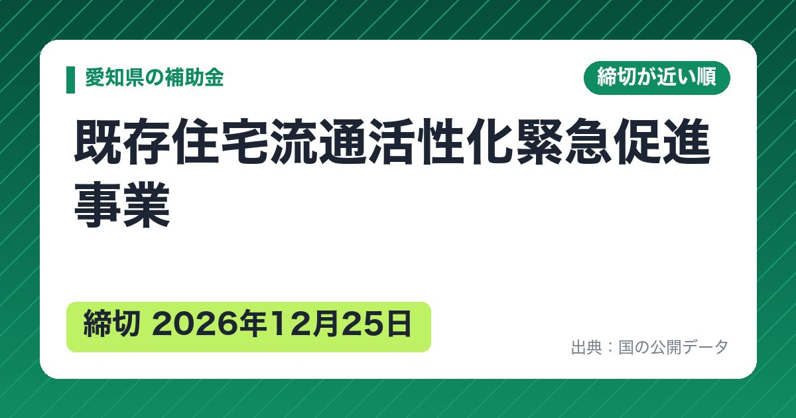

既存住宅流通活性化緊急促進事業

締切 2026年12月25日｜上限 1.58億円
概要
| 対象地域 | 北海道 / 宮城県 / 茨城県 / 埼玉県 / 千葉県 / 東京都 / 神奈川県 / 愛知県 / 滋賀県 / 京都府 / 大阪府 / 兵庫県 / 広島県 / 福岡県 / 佐賀県 |
|---|---|
| 補助上限額 | 1.58億円 |
| 補助率 | 定額 |
| 受付期間 | 2026年3月23日 〜 2026年12月25日 |
| 対象の従業員数 | 従業員数の制約なし |
| 利用目的 | 新たな事業を行いたい |
| 対象業種 | 不動産業、物品賃貸業 |
広告補助金の申請には決算書・帳簿が必要です。会計ソフト・開業の手続きの例：
・やよいの青色申告オンライン  （個人事業主の確定申告に）
（個人事業主の確定申告に）
・無料の確定申告自動化ソフト マネーフォワード クラウド確定申告  （確定申告をかんたんに）
（確定申告をかんたんに）
・無料の会計自動化ソフト マネーフォワード クラウド会計  （法人・個人の会計を自動化）
（法人・個人の会計を自動化）
・補助金なら、パソコンとセットでお得に導入【freee会計】  （補助金を使う導入プランあり・詳細は公式で）
（補助金を使う導入プランあり・詳細は公式で）
・開業届作成するなら【弥生のかんたん開業届】  （創業補助金の前に個人で開業する方へ）
（創業補助金の前に個人で開業する方へ）
・会社設立を無料で始めるなら【弥生のかんたん会社設立】  （法人を作る方へ）
（法人を作る方へ）
公募の内容（原文の抜粋）
■目的・概要
この補助金は、住宅価格が高騰する大都市圏において、リフォーム設計、既存住宅状況調査及び補修費用等の支援を行うことで既存住宅等の流通を緊急的かつ強力に促し、もって、若年・子育て世帯等にとってアフォーダブルな住宅の供給を促進することを目的とする。
■対象住宅
空き家及び所有者の高齢化や相続等により今後遊休化することが見込まれる戸建住宅または共同住宅のうち、次の流通促進を図る住宅
・売買又は賃貸に係る媒介契約の締結
・売買又は賃貸に係る募集の実施（空き家バンクの登録等）
・被相続人によるエンディングノートの作成
・・（国土交通省が定める様式※に基づくものに限る）
・相続人等による将来の処分方法等への合意
・家族信託契約の締結
・その他、遊休住宅等の流通に資する取組（物件募集チラシ等）
・※（参考）国土交通省_住まいのエンディングノートについて
・・・ https://www.mlit.go.jp/jutakukentiku/house/jutakukentiku_house_fr3_000054.html
■対象区域
首都圏、近畿圏、中部圏、札幌都市圏、仙台都市圏、広島都市圏、福岡都市圏及びその周辺において、住宅需要が高く一定以上の住宅地地価の上昇がみられる地域（詳細は交付申請等マニュアル参照）
■事業
①既存住宅状況調査 ＜必須＞
・対象住宅の所有者が行う、既存住宅状況調査方法基準（平成29年国土交通省告示第81号）
・に基づき既存住宅状況調査技術者により実施される調査※
・・※国土交通大臣から指定を受けた住宅瑕疵担保責任保険法人による既存住宅売買瑕疵
・・・保険の検査を含む
②リフォーム設計・提案 ＜任意＞
・対象住宅の所有者に対して、リフォームの設計・提案を行う事業
③補修 ＜任意＞
・既存住宅状況調査によって判明した劣化事象等を補修するための以下の箇所に係る工事
・○構造耐力上主要な部分又は雨水の浸入を防止する部分として既存住宅に係る住宅の
・・品質確保の促進等に関する法律施行令（平成12 年政令第64 号）第５条に定める部分
・○台所、便所、洗面及び浴室等（構造耐力上主要な部分等の補修のために撤去等を要する
・・ものに限る。）
■申請対象事業者
宅地建物取引業者、既存住宅状況調査技術者
■補助対象・補助額（５万円～最大２３万円）
①既存住宅状況調査 ・・： 補助額５万円／戸
・・・・・・・・・・・・・・※５万円未満の場合は実際にかかった費用の千円未満を
・・・・・・・・・・・・・・・切り捨てた額
・・・・・・・・・・・・・（補助金交付先：住宅所有者又は宅建業者(仲介等)、
既存住宅状況調査技術者）
②リフォーム設計・提案 ： 補助額３万円／戸（補助金交付先：宅建業者）
③補修工事 ・・・・・・： 補助額５万円／箇所、かつ上限１５万円／戸
・・・・・・・・・・・・・（補助金交付先：住宅所有者）
■受付期間
交付申請：令和８年３月２３日（月）～ 令和８年１２月２５日（金）１７時《必着》
完了実績： 交付決定日以降 ～ 令和９年２月１日（月）１７時《必着》
・※期限前に予算が上限に達した場合は受付を終了します。
■問合せ先
既存住宅流通活性化緊急促進事業実施支援室（下記URL参照）
メールアドレス：kizon_hojyo@sumaimachi-center-rengoukai.or.jp
■参照URL ※事業の詳細、交付申請等マニュアル・様式類は以下よりご確認ください。
・・https://www.sumaimachi-center-rengoukai.or.jp/kizon_hojyo/
■その他
・交付申請等で使用する様式等は実施支援室のホームページからダウンロードして
・活用してください。
・買取再販住宅において既存住宅状況調査を買取再販事業者自身で実施した場合の
・交付申請はメール提出に限ります。
広告
愛知県のほかの補助金
- 令和７年度（補正） 商用車等の電動化促進事業（建設機械）（締切 2027年1月29日）
- 岡崎ものづくり支援補助金（知的財産権取得事業）（締切 2027年1月31日）
- 岡崎ものづくり支援補助金（依頼試験事業）（締切 2027年1月31日）
- 岡崎ものづくり支援補助金（プラットフォーム活用事業）（締切 2027年1月31日）
- 岡崎ものづくり支援補助金（新製品共創事業）（締切 2027年1月31日）
- 岡崎ものづくり支援補助金（共同研究事業）（締切 2027年1月31日）
- 【東海市】小規模企業等振興資金等信用保証料補助金（締切 2027年3月31日）
- 【愛知県大府市】2026年度大府市カーボンニュートラル推進生産設備導入支援補助金（ユーティリティ設備）（締切 2027年3月31日）